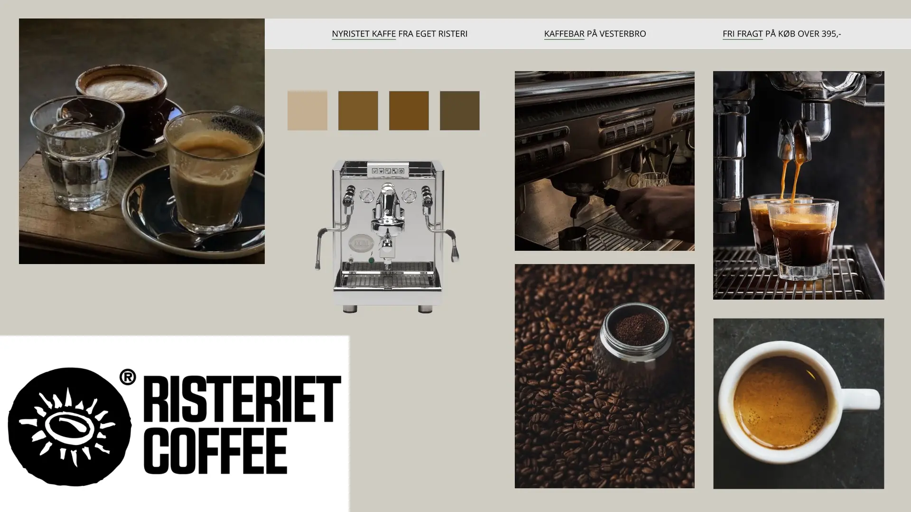
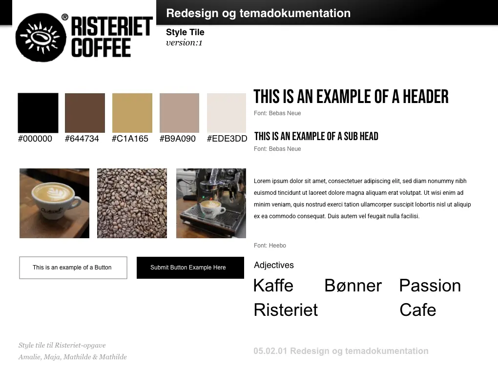

På tema 5 blev vi introduceret videoproduktion. Vi blev introduceret til udstyret og de forskellige reccourser vi har til rådighed i techlounge. Så var vi klædt godt på til at producere video- og billedmateriale.
Først skulle vi producere en pilotvideo og pilotsite. Denne video skulle bestå af et interview, af en person, med en passion. Her valgte vi at interviewe Mathilde, om hendes passion for at studere på KEA. Her benyttede vi b-rolls, som afspejlede hvad man blandt andet laver som multimediedesigner på 1. semester.
Herefter skulle vi redigere vores video og billedmateriale. Vi blev introduceret til Adobe Premiere Pro og de mange forskellige funktioner programmet har. Fordelen ved at lave dette projekt først var, at man kunne opleve hvilke fejl og mangler der eventulet kunne opstå. På den måde var vi godt forberedt til selve redesignprojektet, som vi lavede i grupper.
Besøg pilotsite: klik her
Så kom vi til redesign projektet. Her skulle vi vælge et brand eller en virksomhedshjemmeside som vil skulle lave et redesign af. Vi valgte at lave et redesign af en virksomhed der hedder Risteriet.dk/Risterietcoffee.
Vi startede ud med at tage ud på Risteriets to lokationer og producere en masse forskelligt videomateriale. Vi fokuserede på at få alle skud i forskellige vinkler, så vi kunne pruducere den bedst mulige video. Dette var også en del af projektet. Herudover producerede vi selv en masse forskelligt billedmateriale. Vi gjorde blandt andet brug af portræt, høj format og bred format. Vi endte med stort set kun at bruge vores eget billedmateriale på det endelige redesign.
Inden vi begyndte at kode vores website, lavede vi nogle forskellige tests, heriblandt BERT-test og 5-sek test. Da vi redesigende hjemmesiden i grupper brugte vi vores erfaring fra de tidligere temaer.
Besøg site: klik her
Nedenfor kan du finde link til både Pilotsite, Risteriets oprindelige website, vores redesignet website og procesdokument. Procesdokumentet brugte vi i gruppen til at samle alt vores materiale til rededesignprojektet. Her finder du blandt andet vores planlægning under hele forløbet, en beskrivelse af virksomheden, testsmateriale, interviewmateriale, moodboard, stiletyles, wireframes og meget mere.
Vi afsluttede tema 5 med at fremlægge vores opgaveforløb for hinanden og underviserne i klassen. Dette gjorde vi med Pecha Kucha, som er en præsentationsform. Der er 6 slides som hvert viese i 1 minuts. På den måde kunne man formidle sin proces, med redesignsitet nemt og uformelt.
MOODBOARD
STYLETILE
